| |
|
|
|
|
|
|
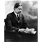 |
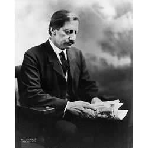 |
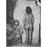 |
|
Despite his grand hoaxes, Cook was nevertheless a genuine pioneer explorer of the polar regions and Alaska, and his actual contributions to exploration should not be forgotten. Here are some of them:
 Cook made
important contributions to the success of Peary’s
North Greenland Expedition. As Peary said, he amassed a
valuable record
of the far northern tribe of Greenland’s Inuit. His
photographic record
of the tribe is a treasure yet to be fully appreciated by
anthropologists. Cook made
significant medical discoveries in regard
to the Inuit as a result of his studies of their physiology and
published
several pioneer papers on the subject. He was also the first
to realize
the physiological effects of the absence of the sun during the polar
winter.
This is perhaps the first clinical description of seasonal affective
disorder.
Cook made
important contributions to the success of Peary’s
North Greenland Expedition. As Peary said, he amassed a
valuable record
of the far northern tribe of Greenland’s Inuit. His
photographic record
of the tribe is a treasure yet to be fully appreciated by
anthropologists. Cook made
significant medical discoveries in regard
to the Inuit as a result of his studies of their physiology and
published
several pioneer papers on the subject. He was also the first
to realize
the physiological effects of the absence of the sun during the polar
winter.
This is perhaps the first clinical description of seasonal affective
disorder.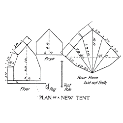 |
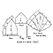 |
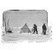 |
|
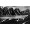 |
|
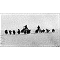 |
Cook was
probably the first man to winter within both
polar circles as part of an organized expedition. His own
plans of
1894 to reach the South Pole anticipated the basic technique that was
successful
in 1911. Cook was an
innovator of exploration gear. His wind proof
tent, convertible sleeping bags, yellow snow goggles, and shallow draft
motor
boat, being some outstanding examples. He is considered to
have pioneered
the Alpine style of climbing. His open-work polar sledges,
made of
second growth hickory, have been much underrated for their rugged
abilities. Cook helped
organize and participated in the first camping
and sledging trips in Antarctica. Cook made a
number of important discoveries in Alaska,
including Kahiltna Dome, Ruth Glacier, which he explored to
its amphitheater
in 1906, Bulls River Pass and the Tokosha Mountains. He was
the first
to circumnavigate the entire Mckinley Group in 1903 and made the second
attempt
to climb Mount McKinley, reaching about 11,000 feet on the Northwest
Buttress,
a record he held for nine years.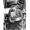 |
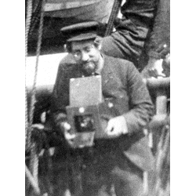 |
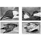 |
|
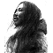 |
|
Cook made an
actual attempt to reach the North Pole, but
fell far short of his goal. On the way he corrected
Sverdrup’s description
of Shei Island as a peninsula. He is probably the discover of
Meighen
Island, though he denied seeing it. Cook’s
photographic record of the Belgian Antarctic
Expedition is incomparable among the early expeditions. He
was a marvelous
photographer of both people and landscapes.Cook’s
books are well written and show an unusual
eye for detail. Of course, some of the incidents described
did not happen, but all are based on his firm polar experience. His
final
book, Return from the Pole, is replete with humane
insight and philosophy
based on a lifetime of unusual experiences. It can still be
read with
profit as literature.Cook’s
liberal attitudes toward aboriginal peoples were
unusually modern. He had a genuine personal touch, which endeared him
to
most he met and which made him so believable in his
fabrications. His perception
of human psychology and human predictability
has allowed his story to be carried down to this day and has achieved
for
it the form of near cultism that continues to compel his advocates to
advance
him as a serious contender for Discoverer of the North Pole.
Although
most scholars of the subject have now discarded that possibility, they
continue
to underestimate Cook’s staying power as a fascinating
personality to the
masses, where he will continue to have adherents until the end of time.
| «- Post-mortem |